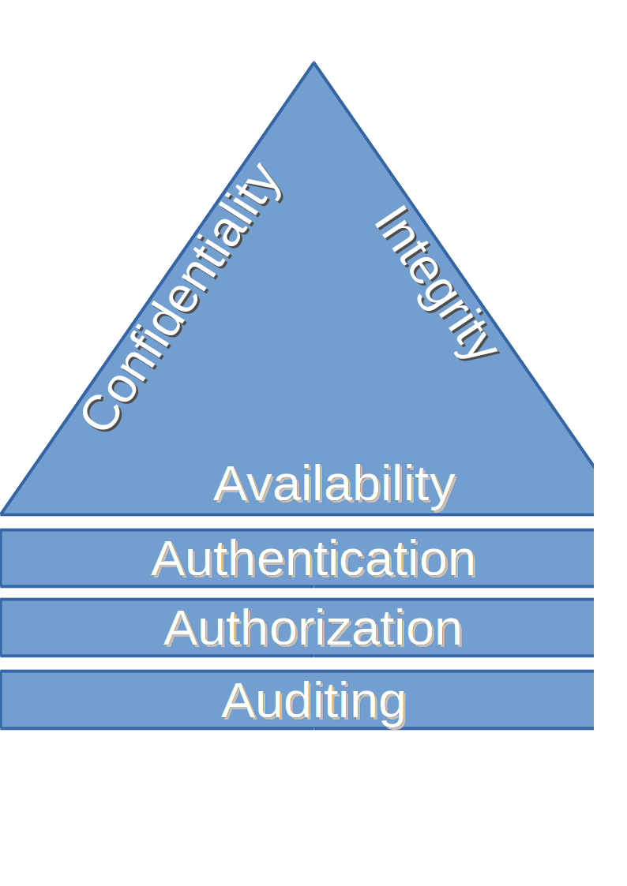

Security Fundamentals
Security is simply about controlling who can interact with your information, what they can do with it, and when they can interact with it. These characteristics of control are described through what is called the CIA triad.

CIA
CIA stands for Confidentiality, Integrity and Availability, and it is usually depicted as a triangle representing the strong bonds between its three tenets. This trio are considered the pillars of application security. Often they are extended with Authorization, Authentication and Auditing. CIA is described as a property of some data or of a process.
Confidentiality
Confidentiality is the protection of data against unauthorized disclosure, or otherwise put, it is about ensuring that only those with the correct authorization can access the data. Confidentiality applies to data at rest, but also to data in motion. It is related to the broader concept of data privacy. A model that has the focus on data confidentiality and controlled access is the Bell-LaPaluda model.
Integrity
Integrity is about protecting data against unauthorized modification, or assuring data trustworthiness. The concept contains the notion of data integrity (data has not been changed accidentally or deliberately) and the notion of source integrity (data came from or was changed by a legitimate source). A model that has the focus on data integrity through access control rules is the Biba model.
Availability
Availability is about ensuring the presence of information or resources. This concept relies not just on the protection of the data itself -- for example by using replication of data -- but also on the protection of the services that provide access to the data -- for example by using load balancing.
Additions
CIA is often extended with Authentication and Authorization as these are closely linked to CIA concepts. Better put, CIA has such a strong dependency on Authentication and Authorization that the confidentiality of the data in question can't be assured without them. Auditing is added as it can provide the mechanism to ensure proof of any interaction with the system.
Authentication
Authentication is about confirming the identity of the entity that wants to interact with a secure system.
Authorization
Authorization is about specifying access rights to secure resources (data, services, files, applications, etc.). These rights describe the privileges or access levels related to the resources in question. It is normally preceded by Authentication.
Auditing (non-repudiation)
Auditing is about keeping track of implementation-level events, as well as domain-level events taking place in a system. It can provide not only technical information about the running system, but also proof that particular actions have been performed. The typical questions that are answered by auditing are "Who did What? When? And potentially How?"